Surface Pen 又被我丢了，感觉不如直接用 Typora 整理笔记。
知识回顾（看之前笔记）
- 微指令：每条机器指令对应一个微程序（多条微指令），并将微程序放在 ROM 中调用执行。
- 基本格式：包含控制信号（微操作）以及下一条微指令的地址。
- 编码：直接表示、编码表示、混合表示
- 微地址形成方法：计数器、多路转移；
- 微指令的指令格式：水平型、垂直型；
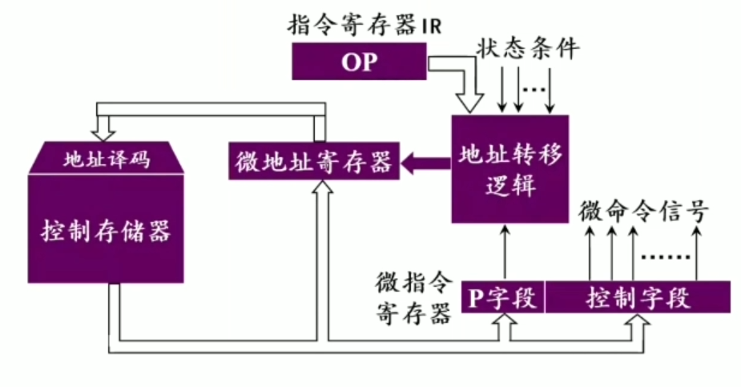
硬布线控制器（抽象）
- 从控制存储器中读出微操作很慢，所以不如直接用组合电路（硬件）去做
- 时序产生器除了产生节拍脉冲 M，还会产生节拍点位 T
- 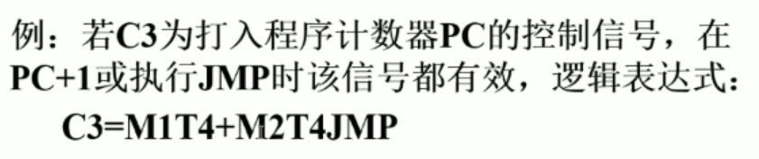
硬布线控制器（以 MIPS 为例）
1. Logic Elements
- Combinational element, e.g. ALU
- State elements / State Machine, e.g. register
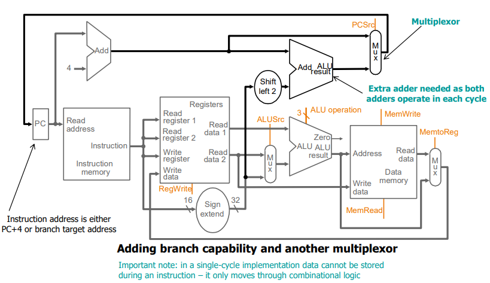
2. ALU control
- Used for
ALUOp: Load/Store, Add/Subtract, R-type(Based onfunctfield) - Select the ALU control based on A Truth Table
3. Main control
Generate according control signals(e.g. branch, ALUOp).
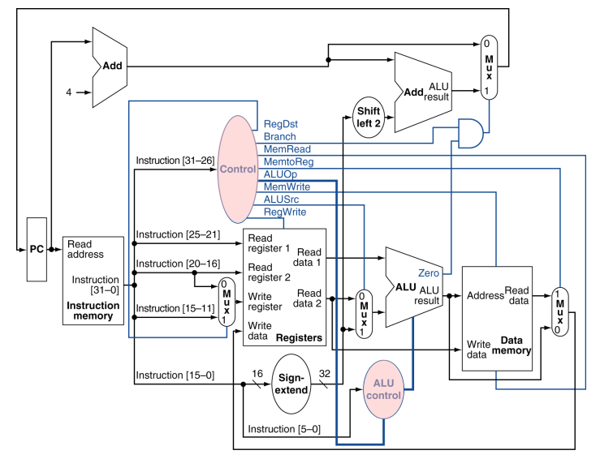
4. Jumps control
Update PC with concatenation of Top 4 bits of old PC and 26-bit jump address with 2-left shift.
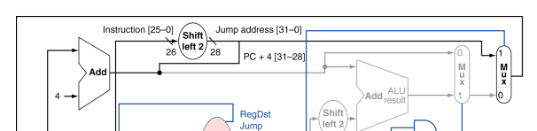
5. 性能问题
- 最长延迟取决于时钟周期（关键路径：load 指令）
- 对于指令执行时间差异较大，则设计方案效率低，必须“加速大概率事件”。
流水线技术
1. 背景
- 早期冯诺依曼计算机基于串行处理，如何改进？
- 加快计算机的主频，但这是有上限的；
- 或者采用并行执行：在相同时延的条件下，用 n 位运算器进行 n 位并行运算（即每一位单独相加）
- 广义并行：在同一时刻（同时性）或者在同一时间间隔内（并发性）完成多个任务，都可体现其并行性
2. 并行技术的三种形式
- 时间并行：让多个处理过程在时间上相互 错开，轮流重叠地使用同一套硬件设备的各个部件。
- 空间并行：强调资源重复，以数量取胜（例如：多处理器系统）
- 时间+空间并行：Pentium 中采用超标量流水线技术，在时间并行的前提下，建立多条流水线实现资源重复。
2.5 流水线的分类
- 指令流水线：指令步骤的并行
- 算术流水线：运算操作步骤的并行，如流水线加法器、流水线乘法器等
- 处理机流水线：程序步骤的并行，也称为宏流水线；或采用多台级联的处理机构成流水线各阶段
3. 流水线计算机的系统组成
- 存储器体系：主存采用多体交叉存储器；Cache
- 流水线（pipelining）CPU：
- 指令部件：取指、译码、计算操作数地址、取操作数
- 指令队列：FIFO，存放译码后指令和取来的操作数
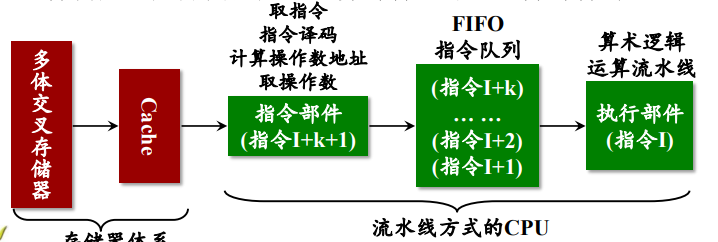
4. 流水线指令执行
把指令的处理过程分解为多个处理步骤，让多条指令能在各 处理步骤重叠执行，从而实现以流水线方式执行指令，达到 加快指令总体执行时间的目的。
具体可以分解为五步操作：取指、译码与读寄存器、执行、访问存储器、写回寄存器
二者对应的时间成本如下：
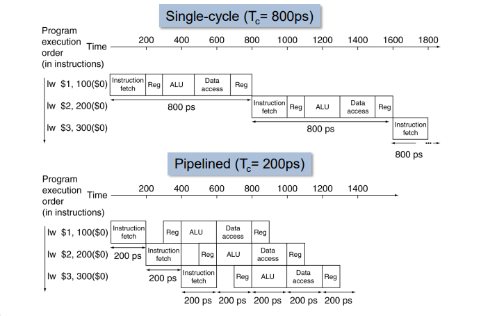
5. 流水技术原理
- 本质上是把一个任务分解为几个有联系的子任务。每个子任务由一个专门的功能部件实现！
- 在流水线中的每个功能部件之后都要有一个缓冲寄存器 ，每个阶段的输出结果需要被暂存
- 流水线中各段的时间必须有相等的时钟周期，防止 “堵塞” 或 “断流”
- 流水线需要有装入时间和排空时间，只有当流水线 完全充满时，才能充分发挥效率
设阶段 所需的时间为 ，缓冲寄存器的延时为 ，则线性流水线的时钟周期定义为：
6. 流水线性能指标
6.1 流水时空图
假设每个阶段所耗时间 ，并行执行 条指令，每条指令有 个阶段，则总时间 T ：
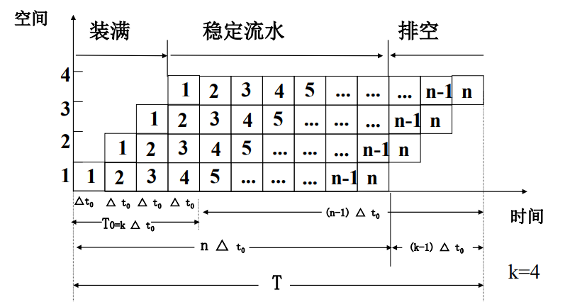
6.2 流水线加速比
衡量在不使用流水线和使用流水线两种情况下完成 n 个任务所用的时间比：
由 , ，可推出 S 的一般表达形式：
其中，当 n 远大于 k 的情况下，最大加速比可以接近 k .
6.3 吞吐率
, 其中 n 为指令条数，Tk 为执行 n 条指令所用时间，考察指令的执行效率。
当，即不考虑流水线装载的假设下，流水线可达到最大吞吐率：
7. 流水线的特点
- 流水线操作并不能加快任何一条指令的执行过程， 只能通过重叠执行，加快连续一串指令的执行过程
- 潜在加速比= 流水线级数 = k
- 流水线的速率受限于最慢的流水段； 流水段的执行时间若不均衡，则加速比很难提高
- 可能在下一个时钟周期中，下一条指令无法进入流水线或不能执行的情况，称之为 （hazard）或相关
8. 流水线冒险
-
结构冒险（structural hazard）/ 资源相关：指多条 指令进入流水线后 在同一时钟周期内争用同一个资源 ，导致发生冲突；
-
数据冒险（data hazard）/ 数据相关：一条指令的执行 依赖于 更早的一条还在流水线指令的执行结果；
-
控制冒险（control hazard）/ 控制相关：由条件转 移指令（或称分支指令）引起；
即：因为提前取到的指令并不是所需要的，从而导致指令不能在预定的时钟周期内执行。
8.1 结构冒险
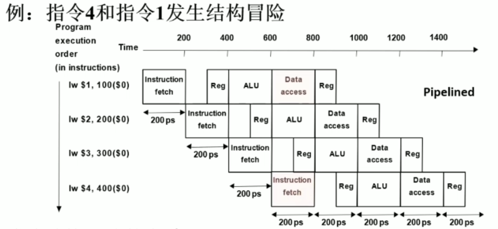
如上图，当指令4从存储器中取指时，则会与指令1读取存储器发生冲突。
为了消除结构冒险，可以采取暂停一个时钟，或者增设一个存储器，将指令和数据放在不同的存储器中。后者是改进的冯诺依曼架构，被称作哈弗结构。
8.2 数据冒险
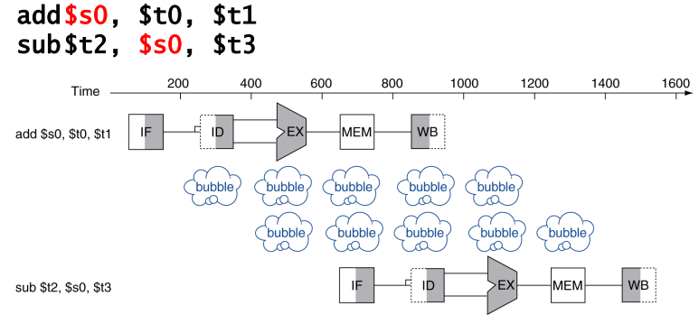
如上图，指令二需要从 $s0 寄存器中取值作为操作数，但是该寄存器必须等待指令一写入 $s0 后才能被访问。比较传统的方式还是向流水线中加入气泡，推迟执行。
或者可采用一种 前推/旁路 的方法，即我们不必等待 $s0 的值被写入寄存器后再读取，而是当指令一的执行阶段结束时，添加一条旁路，将其输出直接作为指令二的输入。

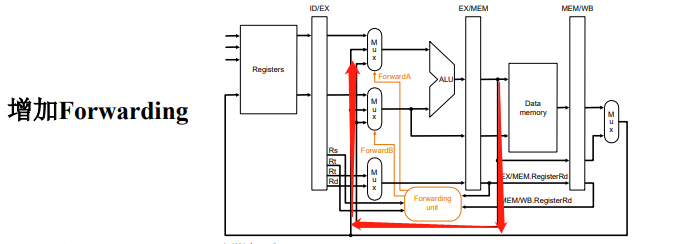
8.3 控制冒险
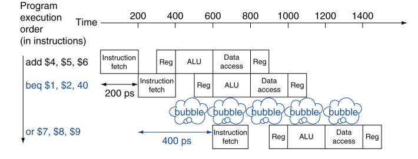
因为 取下一条指令依赖于分支指令的结果，而流水线不能保证总是能取到正确的指令，这将导致流水线阻塞。
一个做法是 等待到分支指令结果出来后，才取下一条指令 。分支指令的结果至少要到 ALU 才能判断。
如图所示，在判断之后可以通过增加专门硬件，在指令译码（第二）阶段完成寄存器比 较和目标地址计算。但还是会产生一个时钟的气泡。
为了消除控制冒险（阻塞），可采用分支预测的技术。
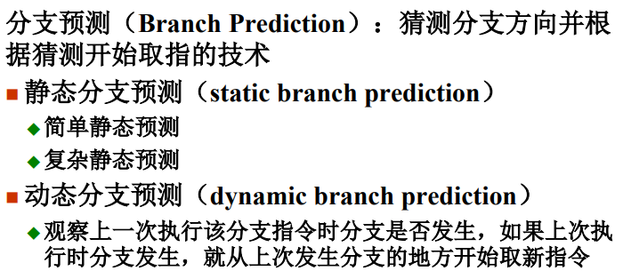
-
简单静态预测：分支总是发生 / 不发生；
-
复杂静态预测：编译器在编译时分析程序完成 对指令序列的重排。
从分支指令进入流水线到得到结果这个时段（称之为 分支延迟时间槽 branch delay slot），其后续若干指令也进入流水线，如果分支发生，则那些后续已进入流水线并译码的指令需要废弃。
因此，我们可以在延迟槽中安排分支指令之前的指令或分支指令目标处的指令，这些指令无论分支是发生都需要执行 ，从而规避控制冒险。
当然，这种重排指令序列的处理由编译程序完成，且指令执行顺序的变动不能影响到程序的正确性。
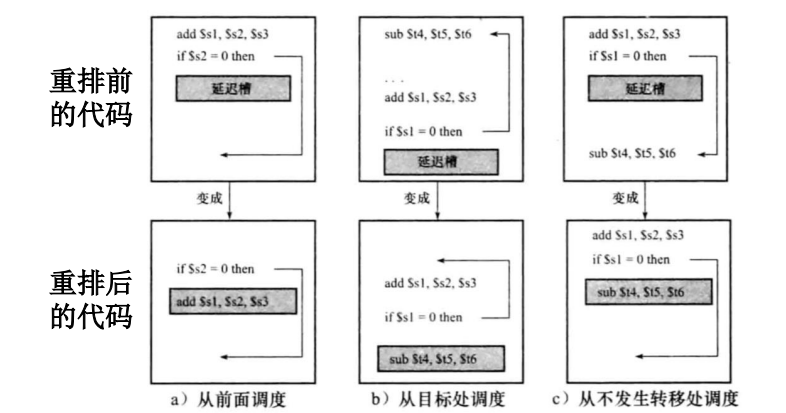
-
动态分支预测：分支历史表 BHT
该表使用分支指令地址的低位部分进行 索引 ，每一表项的预测位记录了 最近一次 是否发生过分支，以及记录了目标地址等内容。
通过查表，我们猜测当前指令会重复上一次分支的结果，并按照预测位执行。如果预测错误，则将预测位取反。
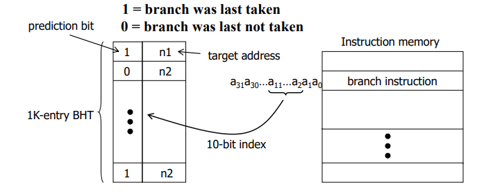
举例：MIPS 流水线
回顾，一条指令可以分成五个阶段。
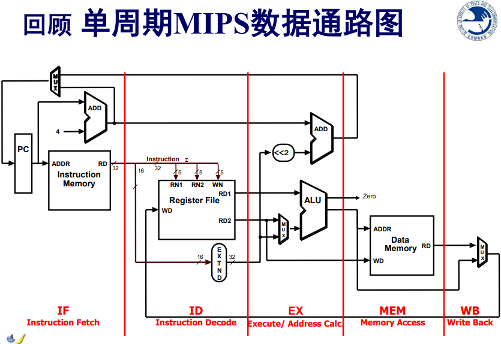
为了更改为流水线操作，在每个阶段之间需要添加 锁存器 存储上一阶段发来的有效信号，根据时钟周期执行。
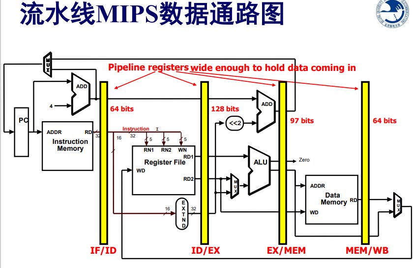
由于指令被分成了若干阶段，对应的控制信号也被分成了若干组，在对应的阶段被使用。
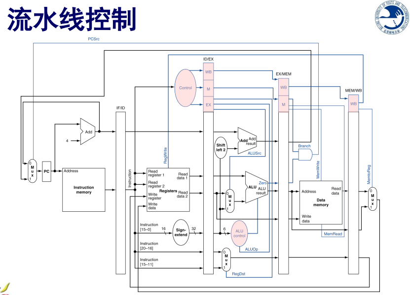
RISC 处理器特点
- 有限而简单的指令集
- CPU 具有大量的通用寄存器（32 个， CISC 一般就 16 个）
- 强调对于流水线的优化